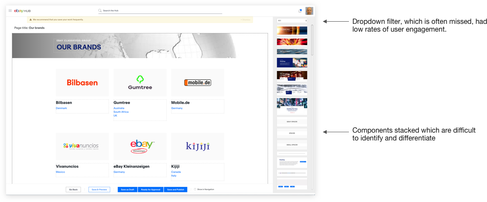
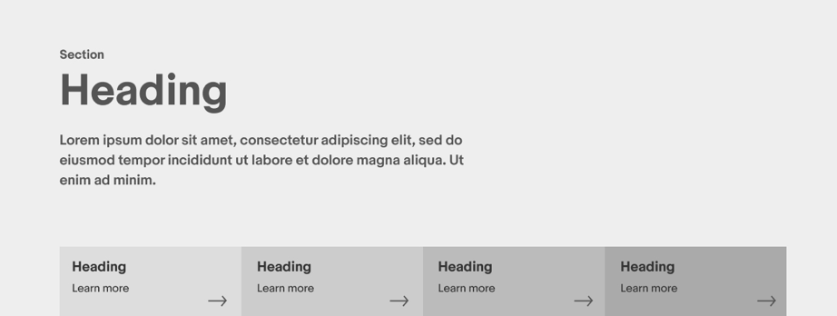
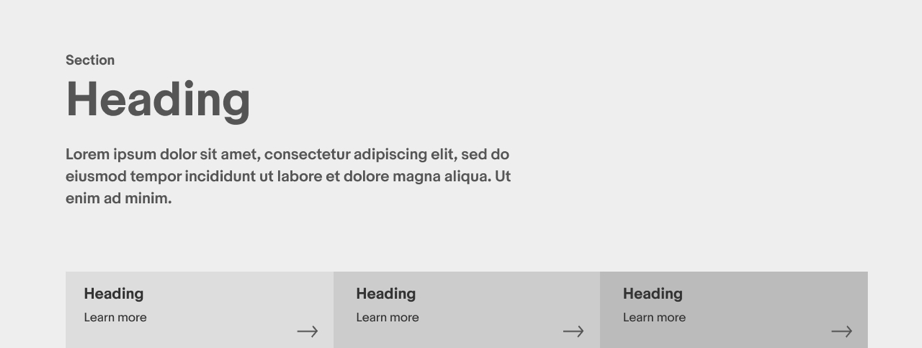
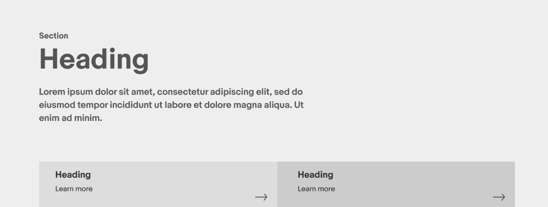
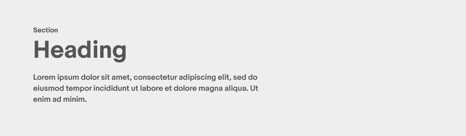
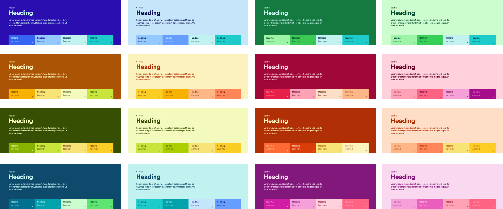
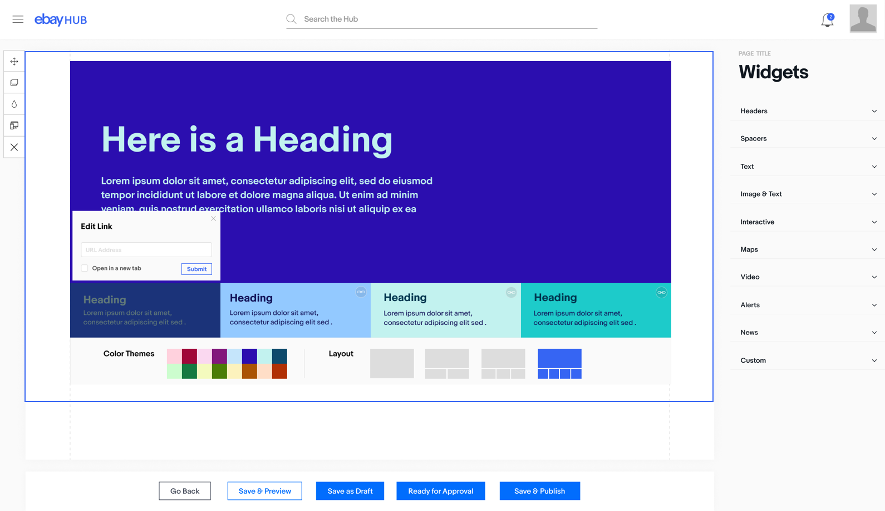

SiteBuilder is the internal Site Suilding tool at eBay. I was responsible for designing and building out new components, redesigning the UI and contributing new features and updates.
Below shows the Sitebuilder Redesign, Component Development, & Functional UI Improvements.
SiteBuilder Redesign
My Role
Designer, Product Development, Frontend Development. (Figma, Sketch, HTML, SCSS, JS, Git, Jira)
The Problem
The large number of components created a clumsy and unintuitive experience for users.
A large number of components (70+) stacked on the editing page, made it difficult for the user to navigate the components in an intuitive way. Also it very was difficult for users to tell what the components did.
The ‘filter dropdown’ provided a means of sorting components by type, however it was often not noticed and not engaged by users. It was essentially a secondary means of navigating the component list. The primary means was to simply scroll the long & ambiguous list of components, and this was inefficient and required a learning curve. We needed a new primary method of navigating the components that addressed these issues.

Wireframes and Other Designs


Video - Screen Capture
The Solution
We chose to group the components in accordions by common attributes, such as text, images, alerts, interactive, etc. Clicking on an accordion reveals the relevant components. This helps the user to navigate the increasingly large number of components in a simple and elegant way.
Also the width of the component sidebar was made slightly wider so that users could see more clearly the component thumbnail, and also we added a tooltip description of each component that would be visible on hover.
Also I added in an ‘expand option’, which would expand the editing area so it was fullscreen, and the component sidebar would be pulled off screen. This allowed the user to work on the content of their site without the clutter of other page elements.
The visual design chose to mute many visual elements, other than the editing area. The component sidebar used muted grays, the background is light gray. There are no bright or colorful hues. This approach was taken so that the most colorful element on the page was the users content (hopefully), and the other elements of the page helped support and build this.
The component UI was also given an update (contextual menu on the left of the component), utilizing new brand colors and brand design aesthetic, which could be described as square, and blocky.
Previous Version
Component Development
My Role
Designer, Product Development, Frontend Development. (Figma, Sketch, HTML, SCSS, JS, Git, Jira)
The Problem
Components were inflexible & had no options to customize, which mushroomed the number of components and was a poor user experience.
There were mutliple problems to solve. We had to integrate the new brand and design language that eBay was developing, into SiteBuilder, as well as overcome the limitations that were constraining us from making more interesting & powerful components.
They were basic drag and drop. If you wanted multiple variations of a component you had to create MULTIPLE components. As components proliferated upwards of 70, it became very clear we needed to make these components smarter.
Layout 1 - Header 4 cards
Layout 1 - Header 3 cards
Layout 1 - Header 2 cards
Layout 1 - Header no cards
Color Themes
Component on Editing Screen
Coded Prototype
The Solution
Firstly, the most used component on our platform was the header component. Every page had one. Also it was increasingly difficult for users to find good high quality images which didn’t infringe on copyright and served their needs well. Luckily eBay’s new brand used large squares and rectangles of color, and it made sense to incorporate that into a powerful header component.
The header component had 16 different color schemes, and 4 different layouts. So that is 64 unique states. The different layouts would include the ability of the user to chose 2,3 or 4 cards incorporated into the header which could link to important pages within their site. Or not use any cards at all. We felt the header needed many different options to avoid repetition across the platform. Usually different departments wanted to stand out in someway.
Functional Developments
My Role
Designer, Product Development, Frontend Development. (Figma, Sketch, HTML, SCSS, JS, Git, Jira)
The Problem
The inability to make elements into linkable areas, created an awkard interaction for the users, particularly at mobile.
Sitebuilder was beginning to be used by the internal eBay app, Passport, to create m-web pages. To create a good experience we had to overcome SiteBuilders limitation of only being able to make links out of TEXT and IMAGES. People are used to being able to tap a card or area and go to another page when on a mobile device, and to a certain degree with a click on other devices. Often page creators would have to make many elements (multiple text elements and images) on a card into links, which was inefficent and the card was still not clickable for the majority of its real estate.
We needed the ability to make sections and non-text/non-image elements clickable to take SiteBuilder to the next level. This required a new UI to be designed and built, that co-existed with the current Froala text editor. We had to retain the ability of the text editor to manipulate text, while limiting much of its functionality that would conflict with the new functionality that we wanted to build, ie. making links out of it's parent elements.
This new link functionality also had to be easy to implement going forward when applying it to new components, so as not to create a load on engineering and unwanted complexity.


The Solution
On the Sitebuilder editing page, I created a pop-up card UI which could be summoned by clicking the link icon on the compononent, and the user is then able to type in the link and control whether it opens a new page or not.
I specified to engineering that the solution must be easy to implement going forward and that it must avoid any significant engineering effort, in the interest of efficiency and avoiding unwanted complexity.
The first component which would utilize this functionality was the Mobile Card Component which was designed specifically for mobile and would utilize a common pattern that was adaptable and customizable, and address business needs.
For internal corporate events such as Leaders Week, and Pride, organizers wanted an inhouse solution that effectively addressed their needs. This required turning what was something I previously I had to hack together with using inline styles, into a easy to use and replicable component which users could utilize freely as an m-web solution.